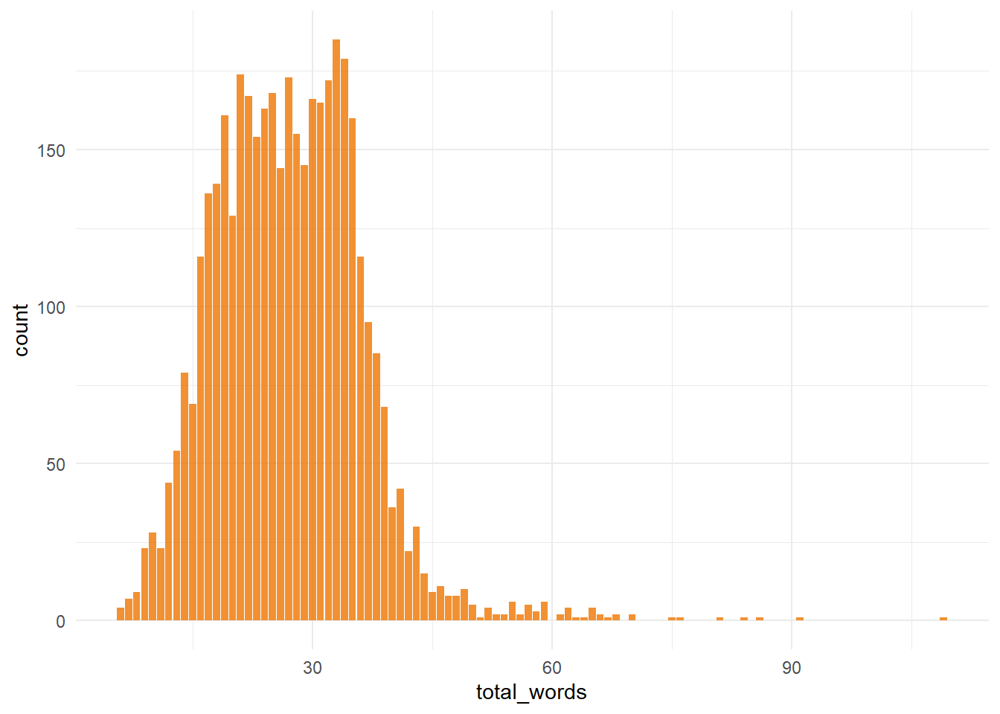

The Bechdel, or Bechdel-Wallace test, is a very simple rule for assessing the representation of women in film (or other media). Originally printed as a cartoon,See here. the test has three criteria:
Having seen two movies over the weekend and been disappointed by the fact that neither passed this test, I was interested in seeing if I could use machine learning to predict whether a movie is expected to pass the test based on its promotional blurb.In retrospect, the term “blurb” may not be as well know as I initially thought - it is essentially a “short promotional paragraph accompanying a piece of creative work”. I also liked the alliteration between Bechdel and Blurb. My focus on the blurb is that, at the time you are planning to go an see a movie, you will have little additional information available to you (e.g. things like meta-critic scores, opening weekend box-offices or even the full script). Previous work has shown that models accounting for a range of factors are pretty good at predicting which movies will pass the test.See here. However, for my uses, assuming that a script for the movie will be available on opening weekend isn’t realistic.
This also seemed like a great opportunity to explore the developing tidymodels framework for machine learning in R, as all my previous ML work had been in Python. Additionally, I was keen to try out a problem that had a particular focus on text processing.
For this analysis, I initially used a TidyTuesday dataset on the Bechdel test.See here. However, on inspection of the data, I decided to change the data munging a little to give me more data to work with. The TidyTuesday dataset is an intersection of data from three distinct data sources, meaning that the resulting dataset was quite small. As I didn’t need the data in the final data source for my analysis, I choose two of the sources, one containing the details of the movie (name/blurb) and the other details on whether it passed the Bechdel test. This approach turned out to be a good one, as it doubled the number of records I had to work with.
library(tidyverse)## Warning: package 'tibble' was built under R version 3.6.3## Warning: package 'tidyr' was built under R version 3.6.3## Warning: package 'readr' was built under R version 3.6.3## Warning: package 'purrr' was built under R version 3.6.3## Warning: package 'dplyr' was built under R version 3.6.3## Warning: package 'stringr' was built under R version 3.6.3## Warning: package 'forcats' was built under R version 3.6.3library(tidytext)## Warning: package 'tidytext' was built under R version 3.6.2cleaned_bechdel <-
# Parse data from Bechdel Test API
jsonlite::parse_json(url("http://bechdeltest.com/api/v1/getAllMovies")) %>%
map_dfr(~ as.data.frame(.x, stringsAsFactors = FALSE)) %>%
# Rename key and convert to tibble
rename(imdb_id = imdbid) %>%
tibble() %>%
# Remove
filter(year >= 1970) %>%
# Clean some odd strings, and quote symbols
mutate(
title = ifelse(
str_detect(title, ", The"),
str_remove(title, ", The") %>% paste("The", .),
title
),
title = str_replace_all(title, "'|"", ""),
title = str_replace_all(title, "&", "&"),
title = str_replace_all(title, "Á", "")
) %>%
# Select relevant columns
dplyr::select(imdb_id, title, rating)
cleaned_imdb <-
# Use static snapshot of IMDB data, as scraping from API can be slow
jsonlite::parse_json(
url(
"https://raw.githubusercontent.com/brianckeegan/Bechdel/master/imdb_data.json"
)
) %>%
map_dfr(~ as.data.frame(.x, stringsAsFactors = FALSE)) %>%
janitor::clean_names() %>%
# Select relevant columns
dplyr::select(imdb_id, plot) %>%
# Clean key variable and convert to tibble
mutate(imdb_id = str_remove(imdb_id, "tt")) %>%
tibble()
# Merge datasets
movies <- cleaned_bechdel %>%
dplyr::left_join(cleaned_imdb) %>%
dplyr::select(imdb_id, title, plot, rating) %>%
# Keep only records with no missing values
dplyr::filter(complete.cases(.)) %>%
dplyr::filter(plot != "N/A") %>%
dplyr::rename("text" = plot) %>%
# Generate binary factor for Bechdel PASS/FAIL
dplyr::mutate(bechdel = factor(
case_when(rating == 3 ~ "PASS",
T ~ "FAIL"),
levels = c("FAIL", "PASS")
)) %>%
dplyr::select(-c(imdb_id, rating)) %>%
dplyr::arrange(title)This dataset contains less than half (N=4157) of the total number of movies in the Bechdel database (N=7877), largely because the static IMDB dataset I used didn’t contain blurbs for all records included in the Bechdel data. A good step here would have been download the missing data from the IMDB API, but as this wasn’t the focus of this post, I moved on.
So now we have our final cleaned dataset, which is explorable via the reactable table below. You can see if the data contains a specific movie by using the search bar at the top.
One last thing to note is that the data from the Bechdel API are community-contributed ratings. As such, there is a possibility that some of the movies have been misclassified. There is nothing we can do about that here, but good to have in the back of your head.
I was initially curious to see how many words were in each blurb:
# Number of words per movie blurb
movies %>%
unnest_tokens(word, text) %>%
count(title, name = "total_words") %>%
ggplot(aes(total_words)) +
geom_bar(fill = "darkorange2", alpha = 0.8) +
theme_minimal()
It seems that most records have blurbs of between 15 and 30 words, so not a huge amount to work with, particularly once you have removed stop words which we’ll come to later.
I also wanted to have a quick look at the number of movies with the two outcomes (Pass/Fail) to ensure the dataset was relatively well balanced.
# Number of movies that pass/fail
movies %>%
ggplot(aes(x = bechdel)) +
geom_bar(stat = "count", fill = "darkorange2", alpha = 0.8) +
theme_minimal()# Proportion of movies that pass/fail
prop.table(table(movies$bechdel))##
## FAIL PASS
## 0.3916286 0.6083714It seems there are more movies in the dataset pass the test than fail it (by a 60/40 split), indicating that we may need to do some imbalanced sampling when training our model. Of interest, this finding goes against what I had expected, as my reading around this topic had suggested that a majority of movies fail the test rather than pass it, the opposite of what we see in this dataset. This again may point to some bias in the data accessible via the Bechdel test API (movies that pass may be more likely to reported to the site behind the API, and so passing movies are over-represented).This is a type of selection bias, and may limited the how generalizable the model is to real-world movies.
First things first, split the data into training and testing dataset, using the default split of 3/4 training and 1/4 testing.
I also created some bootstrapped samples of the training dataset, which are used later to tune and evaluate model performance.
I like using The Answer to the Ultimate Question of Life, the Universe, and Everything as the seed.
library(tidymodels)## Warning: package 'tidymodels' was built under R version 3.6.3## Warning: package 'broom' was built under R version 3.6.3## Warning: package 'dials' was built under R version 3.6.3## Warning: package 'infer' was built under R version 3.6.3## Warning: package 'modeldata' was built under R version 3.6.3## Warning: package 'parsnip' was built under R version 3.6.3## Warning: package 'recipes' was built under R version 3.6.3## Warning: package 'rsample' was built under R version 3.6.3## Warning: package 'tune' was built under R version 3.6.3## Warning: package 'workflows' was built under R version 3.6.3## Warning: package 'yardstick' was built under R version 3.6.3set.seed(42)
# Split data into training and testing sets
movie_split <- initial_split(movies, strata = bechdel)
movie_train <- training(movie_split)
movie_test <- testing(movie_split)
# Create 25 bootstrapped samples from the training data
movie_folds <- bootstraps(movie_train, strata = bechdel)
movie_folds## # Bootstrap sampling using stratification
## # A tibble: 25 x 2
## splits id
## <list> <chr>
## 1 <split [3118/1157]> Bootstrap01
## 2 <split [3118/1139]> Bootstrap02
## 3 <split [3118/1116]> Bootstrap03
## 4 <split [3118/1124]> Bootstrap04
## 5 <split [3118/1170]> Bootstrap05
## 6 <split [3118/1163]> Bootstrap06
## 7 <split [3118/1141]> Bootstrap07
## 8 <split [3118/1126]> Bootstrap08
## 9 <split [3118/1093]> Bootstrap09
## 10 <split [3118/1137]> Bootstrap10
## # ... with 15 more rowsOnce we have our training/test split, the first step is to prepare a feature processing receipe. This makes heavy use of the additional processing steps for text which are available from the textrecipes package.
library(textrecipes)## Warning: package 'textrecipes' was built under R version 3.6.3library(stopwords)## Warning: package 'stopwords' was built under R version 3.6.2blurb_recipe <-
# Define the formula and the training data
recipe(bechdel ~ text, data = movie_train) %>%
# Down-sample to balance classes
themis::step_downsample(bechdel) %>%
# Process text feature
step_tokenize(text) %>%
step_stopwords(text) %>%
step_tokenfilter(text, max_tokens = 2000) %>%
step_tfidf(text) %>%
# Normalise all predictors, as glmnet is sensitive to this
step_normalize(all_predictors())Next, we specify the model (logistic_reg(), with a mixture of 1 meaning it is a pure lasso model) and the engine (glmnet), and combined this specification into a workflow along with the preprocessing steps define above. This (to my mind) is one of the best parts of the tidymodels set-up - it’s really easy to package everything up together in a workflow.
lasso_spec <- logistic_reg(penalty = tune(), mixture = 1) %>%
set_engine("glmnet")
lasso_wf <- workflow() %>%
# Add the preprocessing recipe
add_recipe(blurb_recipe) %>%
# Add the model specification
add_model(lasso_spec)
lasso_wf## == Workflow ====================================================================
## Preprocessor: Recipe
## Model: logistic_reg()
##
## -- Preprocessor ----------------------------------------------------------------
## 6 Recipe Steps
##
## * step_downsample()
## * step_tokenize()
## * step_stopwords()
## * step_tokenfilter()
## * step_tfidf()
## * step_normalize()
##
## -- Model -----------------------------------------------------------------------
## Logistic Regression Model Specification (classification)
##
## Main Arguments:
## penalty = tune()
## mixture = 1
##
## Computational engine: glmnet
Now that the workflow is ready, it is time to tune it by finding the best penalty value to use in the model (currently denoted by the tune() placeholder in the workflow summary above). We first create a list of possible penalties using grid_regular(), and then combine this with the finalised workflow and the bootstrapped training datasets.
Plotting the resulting metrics is a useful way to investigate the effects of the varying penalty strength.
You may need the development version of recipes for this to work, as per this issue.
# Create grid of possible penalties
lambda_grid <- grid_regular(penalty(), levels = 40)
# Register
doParallel::registerDoParallel()
# Calculate ROC_AUC, PPV, NPV for each penalty on bootstrapped data
set.seed(42)
lasso_grid <- tune_grid(
lasso_wf,
resamples = movie_folds,
grid = lambda_grid,
metrics = metric_set(roc_auc, ppv, npv)
)
# Plot resulting metrics
lasso_grid %>%
collect_metrics() %>%
ggplot(aes(penalty, mean, color = .metric)) +
geom_line(size = 1.5, show.legend = FALSE) +
facet_wrap(~.metric) +
scale_x_log10()## Warning: Removed 5 row(s) containing missing values (geom_path).This shows that regularisation had some benefit across all metrics, and that we could pick the best model on the basis of any of the metrics. It also shows, by comparing the NPV and PPV, that one class is harder to predict than the other.
Next, we will use the grid to select the best final model based on the best ROC-AUC (i.e. best balance of sensitivity and specificity), apply it to the bootstrapped samples of the training dataset created above, and collect performance metrics.
best_auc <- lasso_grid %>%
select_best("roc_auc")
final_lasso <- finalize_workflow(lasso_wf, best_auc)
# Fit to bootstrapped samples and collect performance metrics
fit_resamples(final_lasso, movie_folds) %>% collect_metrics()## # A tibble: 2 x 6
## .metric .estimator mean n std_err .config
## <chr> <chr> <dbl> <int> <dbl> <fct>
## 1 accuracy binary 0.604 25 0.00286 Preprocessor1_Model1
## 2 roc_auc binary 0.666 25 0.00250 Preprocessor1_Model1The accuracy here is fairly poor and not very different from chance, indicating that the model has low predictive power.
At this point, I was interested to see what the model considers to be the most important variables in terms of predicting whether or not a movie passes the test. This is useful as a sanity check, to ensure that you haven’t forgotten anything important.For example, forgetting to remove stopwords during preprocessing, or having your outcome coding reversed. In this case, we can use the vip package to visualise the relative importance of each token.
library(vip)
# Get most important aspects
importance <- final_lasso %>%
fit(movie_train) %>%
pull_workflow_fit() %>%
vi(lambda = best_auc$penalty) %>%
group_by(Sign) %>%
top_n(20, wt = abs(Importance)) %>%
ungroup() %>%
mutate(
Importance = abs(Importance),
Variable = str_remove(Variable, "tfidf_text_"),
Variable = fct_reorder(Variable, Importance)
) %>%
arrange(Sign, desc(Importance))
ggplot(importance, aes(x = Importance, y = Variable, fill = Sign)) +
geom_col(show.legend = FALSE) +
facet_wrap(~Sign, scales = "free_y") +
labs(y = NULL)Movies with blurbs that describe “girl(s)”, “women”, “mother” and “sister(s)” are likely to pass the test, while movies about “men”, “boys” and “action” are less likely to pass, which seems sensible.
I also wanted to see how much information the model had access to for each record, once stop words were removed:
# Get number of tokens per record when stop-words are removed
movies %>%
unnest_tokens(word, text) %>%
filter(!(word %in% tidytext::stop_words$word)) %>%
count(title, name = "total_words") %>%
pull(total_words) %>%
median()## [1] 13This shows that once the stopwords are removed in the step_stopwords() element of the preprocessing recipe, there aren’t a whole host of tokens left for the model to base the classification on. This could be one of the reasons for the poor performance.
While we expect the model to perform poorly on the test dataset given the metrics obtained while training, I wanted to work through this analysis to the end. Using last_fit(), I combined the finalised model with the movie data split, and collect the metrics from the test dataset.
# Once happy with the model, apply it to test data.
movie_final <- last_fit(final_lasso, movie_split)## Warning: package 'rlang' was built under R version 3.6.3## Warning: package 'vctrs' was built under R version 3.6.3## Warning: package 'glmnet' was built under R version 3.6.3# Get accuracy/ROC
movie_final %>%
collect_metrics()## # A tibble: 2 x 4
## .metric .estimator .estimate .config
## <chr> <chr> <dbl> <fct>
## 1 accuracy binary 0.591 Preprocessor1_Model1
## 2 roc_auc binary 0.669 Preprocessor1_Model1We can see that we didn’t overfit during training, as the model metrics when applied to the training and the test datasets are similar, but the overall accuracy is low.
A good next step is to produce a confusion matrix to investigate whether a certain class is easier to predict.
# Produce confusion matrix and statistics based on it
conf_mat <- movie_final %>%
collect_predictions() %>%
conf_mat(bechdel, .pred_class)
conf_mat## Truth
## Prediction FAIL PASS
## FAIL 302 320
## PASS 105 312We can then pass this to the summary() function to collect a range of metrics on model performance. Of note, we need to set the event_level argument to “second” so that metrics are calculated with reference to the PASS outcome.
conf_mat %>%
summary(event_level = "second")## # A tibble: 13 x 3
## .metric .estimator .estimate
## <chr> <chr> <dbl>
## 1 accuracy binary 0.591
## 2 kap binary 0.215
## 3 sens binary 0.494
## 4 spec binary 0.742
## 5 ppv binary 0.748
## 6 npv binary 0.486
## 7 mcc binary 0.235
## 8 j_index binary 0.236
## 9 bal_accuracy binary 0.618
## 10 detection_prevalence binary 0.401
## 11 precision binary 0.748
## 12 recall binary 0.494
## 13 f_meas binary 0.595The poor overall accuracy is supported by a low kappa showing “slight” agreement. Additionally, the model finds it easier to predict which movies will fail the test (specificity = 0.74) rather than those that pass the test (sensitivity = 0.49).
I had planned to convert this work into a Shiny application where users could input the blurb of a movie and get a prediction on whether it was expected to pass the test. However, given the poor performance of the model, I decide not to pursue this.
Regardless, this was a really interesting analysis, and it gave me an excuse to explore the tidymodels framework, which I think I am going to use a lot more from know on!